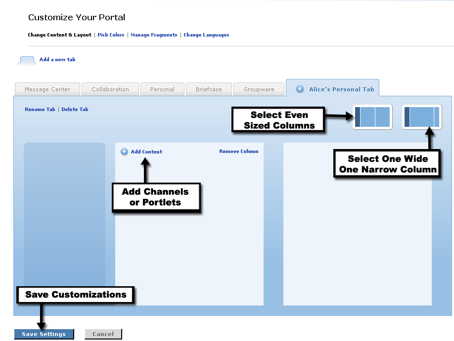

Columns and Channels
After creating a new tab, the next step is populating and customizing it with columns and channels. A new tab will contain one column for content by default. To add an additional column, follow these steps:
- First, you must select the tab where you want to add the column.
- Click the Add New Column link to add a new column.
- Next select the desired column sizing by click the desired column presentation option. In a theme which includes a static first column, two options are provided for the other two columns either evenly sized or one wide, one narrow column.
- You can remove a column at any time by clicking the Remove Column link. You will be prompted to confirm the deletion prior to the removal of the column.
Once you have a column in place, you can add channels or portlets to the tab. To Subscribe to a channel, follow these steps:
- First, you must select the tab where you want to add channels or portlets.
- Click the Add Content link.
- Browse or Search through the channel listing to locate the channel you would like to add. When browsing, clicking the category name will display the list of available channels and portlets within that category.
- Once the desired channel has been located, click on the channel or portlet name, to view a description and access the subscribe option.
- Click the Subscribe to this channel link to add that channel to your layout.
- The channel will be placed in the first column in the top position. Use the arrow icons displayed within the channel to move the channel to the desired position.
- To remove an existing channel, click the Remove button in the upper right hand corner of the channel.
To save new columns and content layouts and exit preferences mode, click Save Settings.
